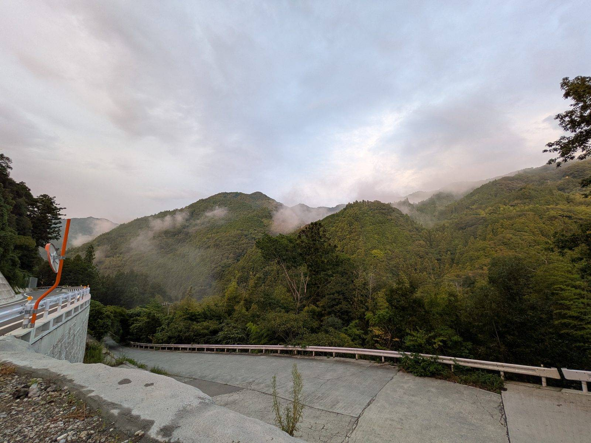

大洲の視点 ・ 出典: 群馬県立自然史博物館研究報告第19号（2015） ・ 約5分で読める

要点
大洲市肱川町（旧肱川村）に、カラ岩谷という石灰岩の採石場跡がある。
ここから出た化石を調べ直した論文が、群馬県立自然史博物館研究報告 第19号（2015年）に載っている。読んでみたら、想像していたよりずっと濃い内容だった。
まず量が違う。論文は「総計1900点近い標本の分別と登録を行った」と書いている。そのうち約1,800点が脊椎動物だ。
識別された種類はこうなっている。
対象は「後期更新世」の地層。およそ13万年前から１万年前にあたる時代だ。
論文の結語に、こう書かれている。「タイリクオオカミ、ヤベオオツノジカ、ニホンムカシジカなど更新世後期の哺乳類は四国ではじめての報告である」。
３種とも、日本列島からはすでに消えている。そしてこの３種はいずれも、四国では初めての報告だった。県内で初、ではなく、四国で初だ。
ヤベオオツノジカは巨大な角を持つシカの仲間として知られるが、今回報告された標本は角ではない。
左下顎の第３小臼歯１点と、右中手骨の破片１点だけだ。それでも標本のサイズと、ニホンムカシジカ・ニホンジカと一緒に出ていることから、本属の日本列島固有種であるヤベオオツノジカと同定された。
ここは正確に書いておきたい。タイリクオオカミ（Canis lupus）は絶滅していない。
いわゆるハイイロオオカミで、今もユーラシアと北米に広く生息している。絶滅したのは「日本列島の個体群」のほうだ。
出土したのは完全な歯１点と、不完全な標本６点。内訳は上あごの第３切歯、第４小臼歯、第１大臼歯、下顎体の破片、左右の腸骨、右大腿骨。
このうち左上第３切歯（OCM-2）だけが完全な形で残っていた。
大陸のオオカミに近いという根拠は、歯のサイズの比較だ。第４小臼歯の最大長は25.5ｍｍ以上。
論文が比較に使った現生標本ではアラスカ産オオカミが25.0～27.0ｍｍ、モンゴル産が25.0ｍｍで、この範囲に収まる。
第４小臼歯についても「北米産オオカミと較べて大差ない」と記されている。
なお、切歯・小臼歯・大臼歯・顎骨片・腸骨は同一個体の可能性が大きく、大腿骨は別個体の可能性が高いと論文は見ている。少なくとも２頭分ということになる。
この論文自体は、更新世のタイリクオオカミと、20世紀初頭に絶滅した小型のニホンオオカミとの関係について「稿を改めてまとめる予定がある」として議論を省いている。
2015年の時点では、そこまで踏み込めなかったということだ。
では、その後どうなったのか。調べたら、2022年に決着がついていた。
山梨大学を中心とし、国立科学博物館や東京工業大学などが加わった研究グループが、約３万5,000年前の更新世の巨大オオカミと、約5,000年前のニホンオオカミのゲノムを比較した。
その結果、ミトコンドリアDNAでは更新世のオオカミはニホンオオカミとはまったく異なる、古く分岐した系統であることが分かった。
さらに核ゲノムの解析から、経路そのものが復元されている。５万7,000～３万5,000年前に巨大オオカミの系統が日本列島に流入し、３万7,000～１万4,000年前にシベリアのオオカミにつながる別系統が流入、その後両者が交雑してニホンオオカミが生まれたという筋書きだ。
つまりカラ岩谷から出た大陸系のオオカミは、ニホンオオカミの「先祖の片方」にあたる可能性が高い、ということになる。
まったくの別物でもなければ、同じものでもない。大洲の山あいの化石が、その物語の一片だったわけだ。
派手さでは絶滅種に負けるが、記録としての価値ならこちらのほうが大きいかもしれない。
鳥類ではノスリ属（Buteo sp.）とアオゲラ属（Picus sp.）が、日本で初めての化石記録とされた。
さらに結語には「オコジョ、テングコウモリなどは化石としてはじめての記録である」とも書かれている。
ノスリもアオゲラもオコジョも、今の日本にふつうにいる動物だ。
生きているのに化石が一つも見つかっていなかった、というほうが意外だと思う。
骨が細くて残りにくい種類ほど、化石記録が空白になりやすい。石灰岩の割れ目という、骨が溶けにくい特殊な環境が、その空白を埋めたことになる。
加えて、南方系の水鳥リュウキュウガモも出ている。タイリクオオカミのような北方系の動物と同じ層に南方系の鳥がいることについて、論文は「注目すべき点かもしれない」と書きつつ、分布の北限だったのか迷鳥だったのかは不明としている。この点はオオサンショウウオの記事のほうでも触れた。
発掘そのものは古い。昭和30年代、愛媛新聞社からの情報が愛媛大学の永井浩三教授を経て横浜国立大学の鹿間時夫教授に伝わり、両大学の合同調査が行われた。
標本はその後、鹿間教授の病気と退職で未整理のままになり、肱川村教育委員会へ移管されている。
動き出したきっかけはダムだった。山鳥坂（やまとさか）ダムの建設によって発掘現場がダムの湛水域に入り、完成後の出水時には水没する。
国土交通省山鳥坂ダム工事事務所は環境保全措置として記録保存を進めており、その一環として平成23年12月、大洲市に保管されている化石の種名を調べたところ名称に間違いが見つかった。
だから著者らが再検討することになった、と論文は説明している。
謝辞にも、山鳥坂ダム工事事務所、大洲市教育委員会文化振興係、日本工営株式会社環境部の名前が並ぶ。
論文が出た2015年から10年以上が経った。現在の状況も確認した。
山鳥坂ダムは2026年５月10日に本体工事の起工式を迎えている。
構想からは44年、総事業費は約1,980億円、2032年度の完成を目指す。
建設地は肱川支流の河辺川で、施工は安藤ハザマ・熊谷組・淺沼組の共同企業体が担う。
つまり、化石が出た場所は、あと数年で水の下に消える。1,900点近い標本と１本の論文が、その場所が存在した証拠として残る。
開発と発見が隣り合わせだった、というより、開発が決まったから発見が記録として成立した、というのが正確なところだと思う。
この記事をサイトに掲載した日: 2026/08/18